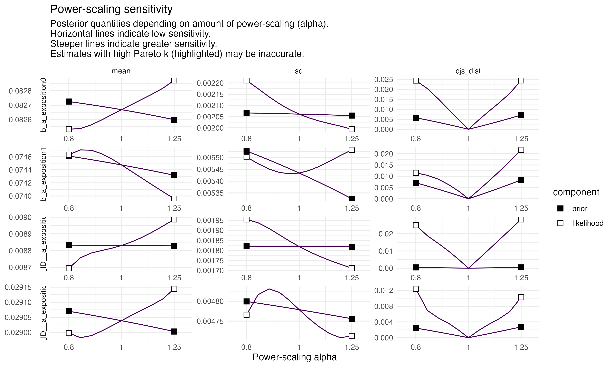

Figure 7.1: Posterior predictive checks of both models (1 = left ; 2 = right). This figure helps comparing observed data to simulated data from the posterior predictive distribution.
The fit from both models are similar so the first model was kept.
7.1.2 Test of different model parametrization
Different models were tested to chose the appropriate model. We tested the inclusion of individual variation and of a correlation between \(L0\) and \(a\).
Code
# Null modelbf.mod.null <-bf( L ~ L0+a*t, L0~1, a~1,center=T,nl=T )# Individual variation in growth rate onlybf.mod.vi <-bf( L ~ L0+a*t, L0~1+(1||ID), a~1+(1||ID),center=T,nl=T )# Effect of the pesticide on mean growth rate, no individual variationbf.mod.trt <-bf( L ~ L0+a*t, L0~1, a~0+exposition,center=T,nl=T )# Addition of inter-individual variation in growth rate, depending on exposition# bf.mod (Defined above)# Addition of a correlation between initial length and growth ratebf.mod.trt.vi.cor <-bf( L ~ L0+a*t, L0~1+(1|c|ID), a~0+exposition+(0+exposition|c|ID),center=T,nl=T )
We use the same priors for all models.
Code
priors.null <-prior(normal(2.32, 2.32*0.2), class = b, nlpar = L0, lb =0) +# Mean values of a prior(normal(0.070, 0.070*0.2), class=b, nlpar = a) +# Résidusprior(exponential(1), sigma)priors.vi <-prior(normal(2.32, 2.32*0.2), class = b, nlpar = L0, lb =0) +prior(normal(2.32*0.2, 2.32*0.2), class = sd, nlpar = L0)+# Mean values of a for the two cohortsprior(normal(0.070, 0.070*0.2), class=b, nlpar = a) +# Individual variations values of a for the two cohortsprior(normal(0.070*0.2, 0.070), class=sd, group=ID, nlpar = a)+# Résidusprior(exponential(1), sigma)priors.trt <-prior(normal(2.32, 2.32*0.2), class = b, nlpar = L0, lb =0) +# Mean values of a for the two cohortsprior(normal(0.070, 0.070*0.2), class=b, coef=exposition0, nlpar = a) +prior(normal(0.070, 0.070*0.2), class=b, coef=exposition1, nlpar = a) +# Résidusprior(exponential(1), sigma)priors.trt.vi.cor <-prior(normal(2.32, 2.32*0.2), class = b, nlpar = L0, lb =0) +prior(normal(2.32*0.2, 2.32*0.2), class = sd, nlpar = L0)+# Mean values of a for the two cohortsprior(normal(0.070, 0.070*0.2), class=b, coef=exposition0, nlpar = a) +prior(normal(0.070, 0.070*0.2), class=b, coef=exposition1, nlpar = a) +# Individual variations values of a for the two cohortsprior(normal(0.070*0.2, 0.070), class=sd, coef=exposition0, group=ID, nlpar = a)+prior(normal(0.070*0.2, 0.070), class=sd, coef=exposition1, group=ID, nlpar = a)+# Default prior for correlations# Résidusprior(exponential(1), sigma)
Figure 7.3: LOO comparison plot of all tested models.
7.2 Checking priors sensitivity
The following table show the standard deviation of the prior distribution, the standard deviation of the likelihood distribution and a diagnosis on whether there is a conflict between the prior and data.
This function evaluates the sensitivity of a prior distribution using power-scaling, a method that modifies the prior distribution by raising it to a power \(\gamma\). The goal is to assess how robust posterior inferences are to different prior strengths.
There seems to be a conflict on the prior and the data for the growth rate individual variation in the exposed group however, the next plots confirm the sensitivity of the model to the priors is very low.
Plots the density of the prior and power-scaled priors for different values of \(\gamma\). This helps visualize how power scaling changes the shape of the prior.
Priors sensitivity.
Code
# Another very heavy object# p_ecdf <- powerscale_plot_ecdf(# m.trt.vi,# variable = c(# "b_a_exposition0",# "b_a_exposition1",# "sd_ID__a_exposition0",# "sd_ID__a_exposition1"# )# )+# theme_minimal()# # ggsave(# filename="Plot_priors_sensitivity_1.png",# plot=p_ecdf,# width=10, height = 6,# path=here::here("fig/")# )knitr::include_graphics(here::here("fig/Plot_priors_sensitivity_1.png"))
1
Plots the empirical cumulative distribution function (ECDF) of the prior and power-scaled priors, making it easier to compare the distributions.
Plots posterior summary statistics (e.g., mean, median, credible intervals) as a function of \(\gamma\). This helps assess how sensitive posterior estimates are to the prior.

Priors sensitivity.
7.3 Comparison with a frequentist approach
7.3.1 Frequentist LMMs using glmmTMB
Code
# Model with no effect between cohortsglmmTMB.null =glmmTMB( L ~ t , df_growth )# Model with the effect of the pesticide onlyglmmTMB.trt <-glmmTMB( L ~ exposition * t, df_growth )# Model with only inter-individual variationglmmTMB.vi <-glmmTMB( L ~ t + (t|ID), df_growth )# Model with the effect of the pesticide and inter-individual variation not depending on expositionglmmTMB.trt.vi <-glmmTMB( L ~ exposition * t + (t|ID), df_growth )# Model with the effect of the pesticide and inter-individual variation depending on expositionglmmTMB.trt.vi.2<-glmmTMB( L ~ exposition * t + (exposition * t || ID), df_growth )